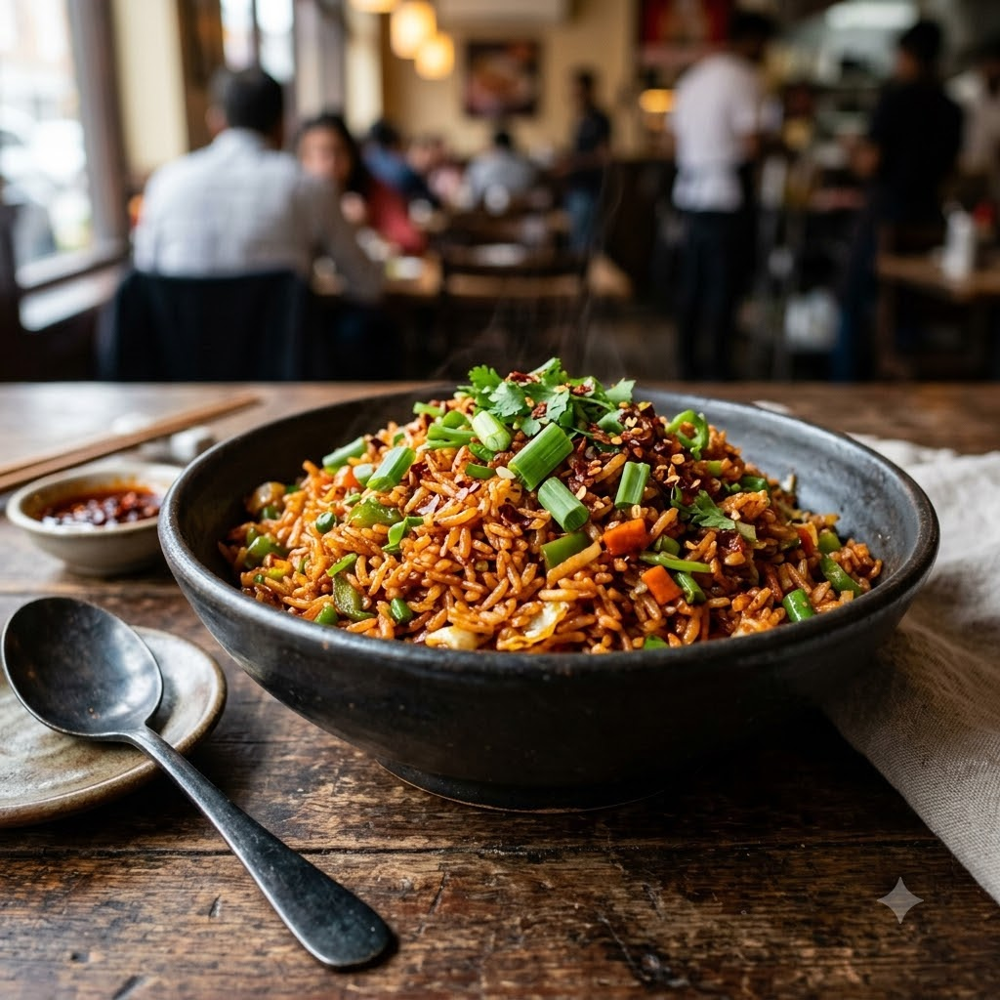

Schezwan Fried Rice

Schezwan Fried Rice
Chef Magic – Sauté Auto 18 min — Serves 3
Vegan • Everyday • Indo-Chinese
🧑🍳 Chef Magic🍽 Serves 3
Prep ahead: Use day-old, chilled rice — freshly cooked warm rice turns mushy when fried.
Ingredients
- 3 cups cooked rice, chilled
- 1/2 cup finely chopped mixed vegetables (carrot, beans, capsicum)
- 2 tbsp Schezwan sauce (store-bought or homemade)
- 1 tbsp soy sauce
- 1 tsp vinegar
- 2 spring onions, sliced
- 2 tbsp oil
- Salt to taste
Method
1Add oil to the jar; select Sauté (Speed 2–4, ~130–160°C) and cook the mixed vegetables for 4 minutes until just tender.
2Add the Schezwan sauce, soy sauce and vinegar; sauté 1 minute until fragrant.
3Add the chilled rice and salt; sauté for 9 minutes, tossing and breaking up clumps, until well coated and heated through.
4Fold in the spring onions for the last 2 minutes and serve hot.
Tip: Go easy on the Schezwan sauce at first and taste as you go — brands vary a lot in heat level.